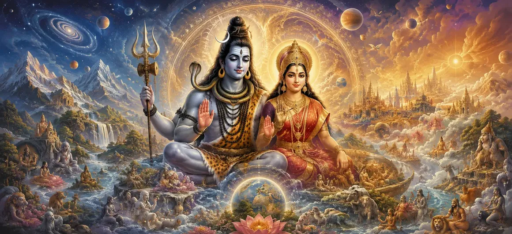

The Narrative of Creation
In Chapter 17 of the Vayaviya Samhita, Lord Vayu elaborates on the profound narrative of universal creation, explaining how Supreme Lord Shiva manifests the cosmos from His transcendent energy.
This chapter reveals the fundamental mechanics of cosmic evolution and divine will.
Devotees gain deep insights into the origin of all living and non-living realms.
Chapter 17 Comprehensive Highlights
Supreme Source
Shiva as the ultimate root and foundation of all creation.
Cosmic Will
The primal impulse that initiated universal manifestation.
Elemental Tattvas
Evolution of primary principles and gross elements.
Cosmic Order
Maintaining harmony across all spatial dimensions.
Divine Energy
Shakti acting in unison with Shiva to forge worlds.
Spiritual Awakening
Recognizing the Divine in every facet of existence.
Core Topics in This Chapter
- 01The Ultimate Source of Creation→
- 02Awakening of the Divine Will→
- 03Manifestation of Primary Tattvas→
- 04Evolution of Gross Elements→
- 05Role of Divine Energy (Shakti)→
- 06Establishment of Cosmic Order→
- 07Proliferation of Living Realms→
- 08Harmony of Matter and Spirit→
- 09Philosophical Significance of Creation→
- 10Transition to Sati Abandons Her Body→
The Ultimate Source of Creation
Lord Vayu explains that Lord Shiva is eternal, formless, and the sole foundation from which all existence flows.
Nothing exists outside His supreme consciousness.
Awakening of the Divine Will
Through His wondrous sport and free will, Shiva initiates the impulse to manifest multiple forms from unity.
Manifestation of Primary Tattvas
The subtle principles of intellect, ego, and mind emerge in precise sequence under divine guidance.
Evolution of Gross Elements
Ether, air, fire, water, and earth take shape to construct the physical framework of the universe.
Role of Divine Energy (Shakti)
Shakti operates as the dynamic force that actualizes Shiva's potential into tangible cosmic reality.
Establishment of Cosmic Order
Laws governing time, space, and planetary systems are meticulously established for cosmic stability.
Proliferation of Living Realms
Brahma, Vishnu, and various divine beings emerge to oversee different tiers of creation and life.
Harmony of Matter and Spirit
The chapter emphasizes that matter and spirit are not separate but interconnected expressions of the Divine.
Philosophical Significance of Creation
Understanding creation awakens detachment from illusions and fosters devotion toward Supreme Shiva.
Transition to Sati Abandons Her Body
Concluding Chapter 17, the narrative lays the foundational context for future divine episodes and historical acts.
Extended Key Teachings of Chapter 17
Shiva's Supremacy
Foundation of all manifest reality.
Divine Will
The prime catalyst for universes.
Tattvas Evolution
Orderly unfolding of cosmic principles.
Cosmic Balance
Harmony across physical and spiritual realms.
Shakti's Power
Dynamic energy bringing worlds to life.
Spiritual Vision
Seeing God in every layer of creation.
Expanded Spiritual Reflection
The narrative of creation teaches us that the entire universe is a sacred manifestation of Lord Shiva's divine consciousness. Recognizing this truth dissolves ego and connects our soul directly to the Supreme Lord.
Living the Message of Chapter 17
View all natural phenomena and living beings with reverence, seeing the divine touch of Shiva in them.
Cultivate inner peace and surrender to the supreme cosmic order governing your life.
Dwell upon spiritual truths to transcend worldly anxieties and delusions.
Detailed Key Spiritual Concepts
The fundamental principle of universal creation.
The supreme divine will initiating creation.
The five gross elements forming matter.
The supreme soul residing in all beings.
The illusionary yet powerful creative energy.
The profound knowledge of universal truth.
Exhaustive Chapter Summary
Vayaviya Samhita Chapter 17 ('The Narrative of Creation') elucidates how Lord Shiva, through His supreme will and divine energy, manifests the subtle and gross elements of the cosmos, establishing the grand order of existence and guiding all living realms.
Frequently Asked Questions
1. What is the primary theme of Vayaviya Samhita Chapter 17 ('The Narrative of Creation')?
The chapter narrates the divine process of universal creation originating from Supreme Lord Shiva, detailing cosmic evolution and the manifestation of elements.
2. Who is the speaker of this narrative?
Lord Vayu is the speaker, enlightening the sages regarding the grand cosmic manifestation.
3. How does universal creation begin according to this chapter?
Creation begins through the supreme will and divine energy of Lord Shiva, manifesting the primary tattvas and cosmic principles.
4. What is the significance of understanding creation in Shiva Purana?
It helps devotees comprehend the ultimate source of all existence and fosters profound spiritual realization.
5. What role do the cosmic elements play in the narrative?
They form the building blocks of the material universe under the guidance of divine consciousness.
6. What is the next chapter for navigation after this chapter?
The next chapter for navigation is 'Sati Abandons Her Body'.
“All creation emerges from Supreme Shiva and rests within His infinite consciousness.”
Continue Through Vayaviya Samhita
Sati Abandons Her Body.